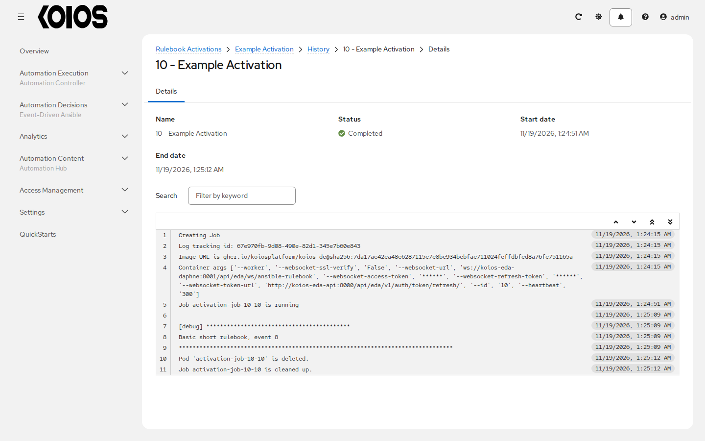

Troubleshooting Automation Decisions
Start with Automation Decisions > Rulebook Activations and open the affected activation. Check its Details, its enabled switch and its History. An activation can have several history instances because it was restarted; inspect the instance from the time of the failure.
The states and policies below come from the backend’s activation enums and UI. The successful examples in Your first rulebook activation and Receive events with event streams were validated on 2026-11-18. The diagnostic cases below are guidance from the sources, not a claim that every failure was reproduced on Koios.
Activation states
State |
Meaning and next check |
|---|---|
Pending ( |
Waiting for an available worker to start the activation. Check worker availability and scheduling if it persists. |
Starting ( |
A worker is starting the activation. Check image pulls and instance output if it does not progress. |
Running ( |
The activation container is running. A listener can remain here while no rule has fired. |
Completed ( |
The activation process completed. This is expected for the finite range source with Never; check action and controller job results separately. |
Failed ( |
The activation failed. Inspect the latest history instance and its error/output. |
Error ( |
The activation is in an error state. Inspect instance output and, if necessary, ask the platform administrator to check the service and worker logs. |
Stopping ( |
The activation is being disabled. Wait for the stop operation to finish before changing it again. |
Stopped ( |
The activation has stopped. Check its enabled switch and the reason in History before starting it again. |
Deleting ( |
Deletion is in progress. Do not create replacement resources until you know which configuration is still active. |
Workers offline ( |
The workers assigned to the activation’s node are offline. This needs worker/platform diagnosis. |
Unresponsive ( |
A legacy status still defined in the backend. Investigate worker health and instance output if encountered; it is not an expected steady state. |
Do not treat Running as proof that a source is receiving events, or Completed as proof
that a controller job succeeded. Follow the event into Rule Audit and then, for
run_job_template, into Automation Execution > Jobs.
Restart policies
Restart policy controls what happens after the activation’s container process ends:
UI choice |
API value |
Behavior |
|---|---|---|
Never |
|
Does not automatically restart the activation when the process ends. Use it for the finite range tutorial to avoid repeating the job launch. |
On failure |
|
Restarts after a process failure rather than after a successful completion. |
Always |
|
Restarts after either success or failure. A finite source can run again and repeat its actions. |
These policies do not replace explicit disable/delete operations or guarantee recovery from an incorrect image, credential or rulebook. If a policy causes repeated failed instances, disable the activation, diagnose the cause and correct its configuration before enabling it again.
Find the output
Open the activation’s History tab and select the relevant instance.
Its Details page shows status, start/end dates and the instance output, with log filtering and follow controls while it is running.
Open Automation Decisions > Rule Audit for the fired rule and inspect Details, Events and Actions. Leave Skip audit events unchecked when creating the activation if you need those records.
If the action launches a controller job, inspect that job’s status and output independently.
A platform administrator can also inspect the EDA service, worker and activation pod logs using an explicit cluster context and namespace. Follow platform troubleshooting and operation; do not edit generated pod configuration to work around a failure. Redact credentials and sensitive event payloads before sharing diagnostics.

Decision environment image cannot be pulled
A decision environment resource can be saved even when its image cannot be fetched. If the activation remains Starting or fails during startup:
Check Image for the complete registry, repository and tag or digest. An abbreviated digest copied from a table is not a usable image reference.
Check that cluster nodes can reach the registry. The release registry is private and requires project-granted read access.
For the release image, confirm that the platform’s
defaultServiceAccount has the configured pull secret. With the standard installer this is supplied by the registry-access setup.For a private image needing separate credentials, create Container Registry under Automation Decisions > Infrastructure > Credentials, then select it in the decision environment’s Credential field. A registry credential attached to the controller’s execution environment does not configure an EDA decision environment.
Check the Pull choice. Never pull container before running. requires an image already present on the node;
missingpulls it when absent. Neither policy grants registry access.
After correcting the cause, restart or enable the activation as appropriate and inspect the new History instance. The administrator may need Kubernetes pod events for failures that happen before the rulebook process can write output.
Project import failed or the rulebook is missing
Open Automation Decisions > Projects and inspect the project status and import details. Check its Source control URL, selected branch/tag/commit and Source control credential. Public repositories still require network access; private repositories also require a credential with permission to read them. A certificate failure must be resolved with appropriate trust.
Use Sync project after correcting the configuration. Wait for Completed before selecting the rulebook. If a sample changed, inspect Git hash and the rulebook path for the imported revision rather than assuming the latest repository has the same content as this tutorial.
Platform credential or certificate failure
For a run_job_template action:
Use an EDA credential of type Red Hat Ansible Automation Platform, selected on the activation. It is distinct from a controller-side credential and from an event stream’s sender credential.
Set its host field to
https://<platform>/api/controller/. Include the controller prefix but do not addv2/or a job-template endpoint.Use a valid platform user/password or an OAuth Token, not both. Check that the account can launch the template in the named organization and that its token has the required scope.
Keep Verify SSL enabled for HTTPS. The decision environment must resolve the hostname, reach it and trust its certificate chain. The operator’s
bundle_cacert_secretis not automatically installed in decision environment images: use a suitable custom image with the private CA when needed. Also check hostname mismatch and certificate expiry.
A login that works in the browser does not establish that the activation container can reach or trust the same address. Do not make disabling certificate verification the normal fix.
Event stream returns 403 Credential mismatch
For the Basic tutorial, verify all of the following:
You posted to the URL of the intended event stream, including its UUID and
/post/.The stream’s Credential is the expected Basic Event Stream credential.
curl -uuses that credential’s username and current password. They are not the platform user’s password or Example Platform Credential used by a controller action.A proxy has not removed or replaced the
Authorizationheader.
The validated incorrect-password response was HTTP 403 with
{"detail":"Credential mismatch"}. A missing authentication header or another malformed request
can produce a different error; not every 403 has the same cause. Correct the sender configuration
and retry with the intended credential rather than weakening authentication.
Event accepted but no rule fires
An HTTP 200 confirms acceptance by the stream endpoint, not a matching rule or completed action.
Check these layers in order:
Forward events to rulebook activation is enabled on the stream (
test_mode: false). Test mode stores diagnostic data without forwarding it.The activation is enabled and Running, and its Event streams mapping associates the correct rulebook source with the intended stream.
The body matches the condition. For
webhook_port.yml, send{"ping":"pong"}: the stream wraps the request body inpayload, so the condition isevent.payload.ping == "pong".Skip audit events was not enabled. If it was, missing audit records do not prove that the rule never ran; inspect instance output and action results too.
If the rule fired but its action failed, inspect Actions and the downstream service. A controller permission or job failure is separate from an event-stream authentication failure.
The range tutorial checks event.i == 8; the webhook tutorial checks event.payload.ping.
Using the wrong event shape can leave a healthy activation waiting without matching any rule.
Disabling and deleting
Use the activation’s enabled switch to stop it while preserving its configuration. Wait for Stopping to finish; Edit rulebook activation requires the activation to be disabled. To run it again, correct the configuration and enable it, or use Restart rulebook activation when it is enabled and a new run is intended.
Delete rulebook activation removes the activation rather than temporarily suspending it. Deleting or disabling an activation does not roll back actions already performed or cancel a controller job that was launched earlier. Review that job separately.
For maintenance, disable first and inspect History/output before deciding to delete the resource. Do not use delete/recreate loops as a substitute for diagnosing registry, worker or authentication failures. An event stream’s forwarding switch and an activation’s enabled switch control different parts of the flow.